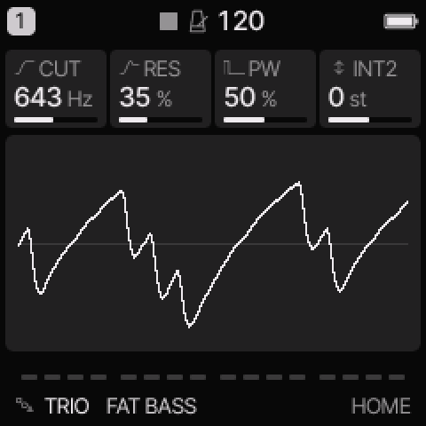
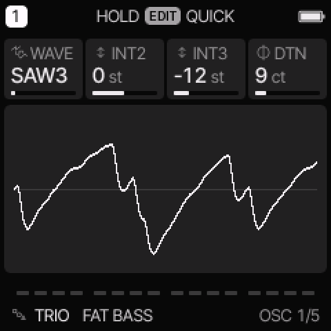
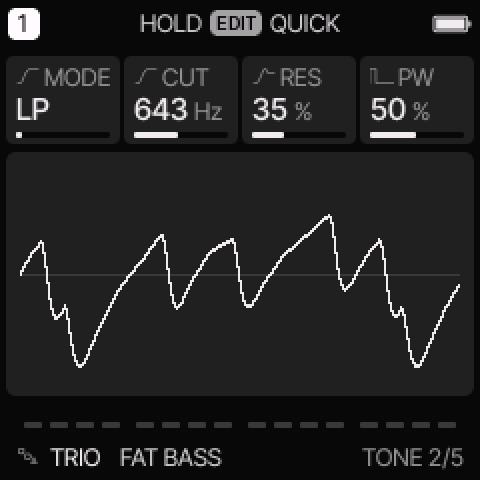

TRIO engine
All engines · Modes and shared controls
Use TRIO for three-oscillator basses, pulse-width leads, sync sweeps, and ring-modulated metal.
How the sound is made
Three oscillators feed a multimode filter. WAVE selects a complete oscillator combination. Some combinations use hard sync, ring modulation, or bitwise combined waves.

TRIO on HOME. These knobs apply to the selected track unless HOME LEVELS is enabled.
HOME knobs
| Knob 1 |
Knob 2 |
Knob 3 |
Knob 4 |
| CUT |
RES |
PW |
INT2 |
For HOME LEVELS, see HOME and mixer.
Engine controls
Press the panel EDIT button to cycle the engine pages.
Pause between presses to avoid opening its shortcut layer.
The musical EDIT key is a different control.
OSC page

OSC is engine page 1.
| Control |
What it changes |
| WAVE |
Select an oscillator combination. See the groups below. |
| INT2 |
Tune oscillator 2 relative to the played note, in semitones. |
| INT3 |
Tune oscillator 3 relative to the played note, in semitones. |
| DTN |
Detune oscillator 2 up and oscillator 3 down, in cents. |
TONE page

TONE is engine page 2.
| Control |
What it changes |
| MODE |
Select LP, BP, HP, or NOT (notch) filtering. |
| CUT |
Set the filter cutoff. |
| RES |
Increase emphasis near the filter cutoff. |
| PW |
Set pulse width. ENV or LFO routed to SHP moves it. |
Oscillator combinations
| Group |
WAVE choices |
Result |
| Basic stacks |
SAW3, PLS3, PPT, SST, TRI3 |
Three saws, pulses, triangles, or mixed stacks. |
| Combined waves |
S&T, P&S |
Bitwise combinations with a more complex harmonic shape. |
| Noise |
P+N, NOIS |
Pulse/noise combination or pitched noise. |
| Hard sync |
SYNC, SYNCP, SYNC3 |
One oscillator restarts another on each cycle. |
| Ring modulation |
RING, RING3, R+S, R+SP |
Oscillator interaction for metal and bell-like tones. |
INT2 and INT3 can change the tone as well as the apparent harmony in sync and ring modes.
A silent oscillator can still act as a ring modulator.
Try these changes
Animate a pulse lead
Load SID PWM. On LFO DEST, add a small SHP amount. Compare a slow and fast LFO RATE. Adjust PW to move the centre of the sweep.
Load SID METAL. Hold a note while changing INT3 by one semitone at a time. Compare simple intervals with less regular ones.
Factory presets
FAT BASS, SYNC LEAD, RING BELL, SID PWM, SID RUBBER, SID SYNC, SID METAL, SID CHOIR.
See the inspired preset catalogue for the references behind the newer sounds.
Limits and useful checks
TRIO is SID-inspired. It does not reproduce a specific SID revision. Some combined waves can sound rougher at high notes.
Save a user preset or project before loading another sound if you want to keep your edits.